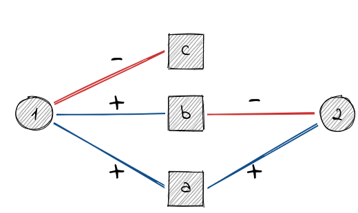

This vignette describes methods implemented to analyze signed two-mode networks.
Projections
A common analytic tool for two-mode networks is to project the network onto on relevant mode. This is easily done using the adjacency matrix . yields the row projection and the column projection. The resulting networks will thus be weighted. Several methods exist to turn a weighted projection into an unweighted network where only the most significant edges are included. A number of these methods are implemented in the backbone package.
Projecting signed networks, however, is not as straightforward. Consider the following simple example.
el <- matrix(c(1,"a",1,"b",1,"c",2,"a",2,"b"),ncol = 2,byrow = TRUE)
g <- graph_from_edgelist(el,directed = FALSE)
E(g)$sign <- c(1,1,-1,1,-1)
V(g)$type <- c(FALSE,TRUE,TRUE,TRUE,FALSE)
If we use the regular projection rules we obtain
A <- as_incidence_signed(g)
R <- A%*%t(A)
C <- t(A)%*%A
R
#> 1 2
#> 1 3 0
#> 2 0 2
C
#> a b c
#> a 2 0 -1
#> b 0 2 -1
#> c -1 -1 1The row projection suggests that there is no relation between 1 and 2, when in fact there is a negative path (via b) and a positive path (via a) between them. The same holds for the column projection and the nodes a and b.
The paper of Schoch introduces two projection methods that circumvent this “nullification”. The package implements the duplication approach since it plays well with existing binarization tools. The first stepp is to turn the signed two-mode network into an unsigned one. This is done by duplicating all vertices of the primary mode (i.e. the one to project on). For example, vertex a turns into two vertices “a-pos” and “a-neg”. The vertices of the secondary mode connect to these new vertices depending on the sign of edge. For instance, 1 has a positive edge to a and thus 1 connects to a-pos.
This can be done for the whole network with the function
as_unsigned_2mode() by specifying the primary mode (either
TRUE or FALSE).
gu <- as_unsigned_2mode(g,primary = TRUE)
gu
#> IGRAPH 7d5ddf5 UN-B 8 5 --
#> + attr: name (v/c), type (v/l)
#> + edges from 7d5ddf5 (vertex names):
#> [1] a-pos--1 b-pos--1 c-neg--1 a-pos--2 b-neg--2Now, any binarization toll (e.g. from the backbone
package) can be applied since the network is an unsigned two-mode
network. For illustration, we include all edges with a weight greater
one (the “universal” approach) since it can be done without the
backbone package.
pu <- bipartite_projection(gu,which = "true")
pu <- delete_edge_attr(pu,"weight")
pu
#> IGRAPH f41a722 UN-- 6 4 --
#> + attr: name (v/c)
#> + edges from f41a722 (vertex names):
#> [1] a-pos--b-pos a-pos--c-neg a-pos--b-neg b-pos--c-negAfter binarization, the network is turned back to an unsigned network using a contraction rule. The contraction rule works as follows.
If there is an edge (a-pos,b-pos) or (a-neg,b-neg) in the projection then there is a positive edge (a,b) in the signed projection.
If there is an edge (a-pos,b-neg) or (a-neg,b-pos) in the projection then there is a negative edge (a,b) in the signed projection.
If there is an edge (a-pos,b-pos) and (a-neg,b-pos) (or, e.g., (a-neg,b-neg) and (a-pos,b-neg)) in the projection then there is an ambivalent edge (a,b) in the signed projection.
This is done with the function as_signed_proj().
ps <- as_signed_proj(pu)
as_data_frame(ps,"edges")
#> from to type
#> 1 a b A
#> 2 a c N
#> 3 b c NThe projection of a signed two-mode network thus may contain three types of edges (positive (“P”), negative (“N”) or ambivalent (“A”)). The concept of ambivalent ties comes from work by Abelson & Rosenberg and Cartwright & Harary.
More technical details can be found in the original paper by Schoch. Consult the vignette about complex matrices to learn about analyzing signed networks with ambivalent ties.
References
Doreian, Patrick, Paulette Lloyd, and Andrej Mrvar. 2013. “Partitioning Large Signed Two-Mode Networks: Problems and Prospects.” Social Networks, Special Issue on Advances in Two-mode Social Networks, 35 (2): 178–203.
Schoch, David. 2020. “Projecting Signed Two-Mode Networks” Mathematical Sociology, forthcoming
Abelson, Robert P., and Milton J. Rosenberg. 1958. “Symbolic Psycho-Logic: A Model of Attitudinal Cognition.” Behavioral Science 3 (1): 1–13.
Cartwright, Dorwin, and Frank Harary. 1970. “Ambivalence and Indifference in Generalizations of Structural Balance.” Behavioral Science 15 (6).